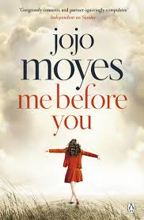

Love, loss, and life lessons that hit harder than a Nicholas Sparks novel. ğŸ˜
Quirky Lou meets brooding Will. He’s in a wheelchair; she’s in bright tights. A love story unfolds, but life (and gut-wrenching emotions) have other plans. 💘ğŸ˜
✔️ It will make you laugh, cry, and reconsider your entire life. 🥲
✔️ Lou and Will’s banter is top-tier sarcasm. 🔥
✔️ It reminds you to live boldly (before you run out of time). ⏳
(This book will emotionally wreck you... but in a good way. Probably.)
"You only get one life. It’s actually your duty to live it as fully as possible."
"Sometimes, Clark, you are pretty much the only thing that makes me want to get up in the morning."
"I just... want to be a man who has been to a concert with a girl in a red dress. Just for a few minutes more."